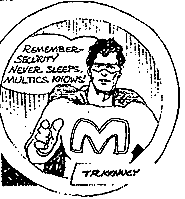

A lot of this won't seem funny to non-Multicians. (No offense is intended to any member of any group by these items.)
Multics Man

Here is the Multics Man comic, done by an artist named T R Kenney while he was at Honeywell FSO. Haven't been able to track him down to ask permission, but I hope he will accept the thanks of Multicians everywhere for drawing it.
Multics Man cover (65K)

There is also a 9-panel comic strip. (54K)

God-like Master Multics Programming
Raphael Frommer proposed the following Multics Education course on 3/3/80:
- Title: God-like Master Multics Programming
- Code: F15Z
- Intended for: gurus, daemon-worshipers, masochists, people who speak to BSG daily
- Prerequisites: 10 years on Multics, PhD in Latin, 200 IQ, or equivalent experience
- Major topics:
-
PL/1 to LISP translation
LISP to Latin translation
Ring 7 implementation of hell
The influence of Emmanuel Kant on pxss
Evidence of MR 9.0 in the Old and New Testaments
The relationship between system crashes and user-community absolution
Request for Comedy
The following was circulated anonymously at MIT Project MAC in the mid-70s. Thanks to Sammy Migues for unearthing it.
Computer Systems Research Division Request for Comedy No. 0 TITLES FOR PEOPLE INVOLVED WITH MULTICS by anonymous.CompSys.a Now that Multics is a marketed product, there seems to be a need for some formal titles that express one's level of involvement with Multics. How about the following for a start: User - one who learns something more about Multics every time he logs in. Multician - one who knows a fair amount about several phases of the Multics design; a jack of all trades, master of none. Multicologist - one who studies part of the Multics design in depth, unearthing relics of the past, and making exciting discoveries daily. Multometrist - one who measures and characterizes, compares and scrutinizes, Multices. Multical Theorist - one who is able to talk about Multics without once referring to pxss, ipc, page, or hcs. Operator - one who is certain to know less about Multics than you do. _______________ This note is a formal non-working paper of the Project MAC Computer Systems Research Division. It should be reproduced and distributed wherever levity is lacking, and may be referenced at your own risk.
A Multics Psalm
The Overseer is my shepherd, I shall not get bumped. He maketh me to handle QUITs gracefully, He leadeth me past all error conditions. He restoreth my stack frame. He leadeth me into inner rings for my process's sake. Yea, though I walk through the valley of the shadow of GCOS, I will fear no preemption, for the Initializer is with me. ACLs and AIM, they comfort me. He preparest a process before me in the presence of other users. He anointest my session with guaranteed_login, My quota never runneth over. Surely security and data integrity will follow me all the days of my registration, and I shall dwell in the house of MULTICS forever.
[Scott adds:] The Psalm is published in Sociology, a Text Reader (2nd ed) by Brabant, Forsyth, Gramling and Mooney. The book is put out by Ginn Press (at least, the first edition was; now it's in its 4th printing) or maybe it's called Simon and Schuster Custom Publishing. The article in which it appears is "The Computer as a Construct of Social Reality" by Sarah Brabant.
Another Multics Psalm
Found the following in  ftp://ftp.sdsc.edu/pub/other/multics/:
ftp://ftp.sdsc.edu/pub/other/multics/:
Our Supervisor, Who art in Ring 0, Multics be thy name, Thy booting come; thy commands be done, In absentee as it is in interactive. Give us this day our daily quota, And forgive us all our ring violations, as we forgive those who bump us. And lead us not into ring 7, But deliver us from GCOS. For Thine is the root and the MIP rate and the hierarchy Forever and ever (or until the next release). Foo.
It was a TIFF file in old-English type. Any idea who wrote it? SDSC is San Diego Supercomputer Center.
Unix and Multics
Multics is mentioned in the widely reprinted 1991 gag CREATORS ADMIT UNIX, C HOAX
OS comparisons to classical literature
- Multics - Iliad
- Full of heroes & exploits.
Modern firepower renders most of its tactics obsolete. - Unix - Aeneid
- Studied in more classrooms than the Iliad.
Doesn't make it better or more of a success.
Different language, different cultural matrix, different goals. - OS/360 - Internal revenue code
- Widely studied but only a few consider it epic.
- MSDOS - Gilligan's Island
- Mac OS - Cheers
- Windows - Married, With Children
Hardcore Joke
What's purple and runs in ring zero?
wired_plm
The Twelve Days of Multics
(sung to the tune of The Twelve Days of Christmas)
On the twelfth day of MULTICS
My true love sent to me:
Twelve analysts twitching,
Eleven options switching,
Ten stacks a-popping,
Nine aids debugging,
Eight tapes attaching,
Seven DIM's a-dimming,
Six ITS a-pointing,
Five protection rings,
Four calling sequences,
Three link pairs,
Two system dumps,
And a file tree hierarchy!
Personal Ad
in 1983 while at GM I did an ad in the Detroit Metro Times that made it all the way to Phx, and Wash DC:
SWM (Straight White Multician) seeks interactive female to respond to my every command. Into binding, probing and peripheral I/O. ... No freaks or weirdos.
Cookie Table
what site would be complete without a cookie table? here are some that I came up with:
L{in~re N~r{oise}
window_wakeup_waiver_: Window wakeup was waived when wegion
was wipped.
fim_fault_flag_facility_: Fallacious FIM fault flag found.
abacus_util_$abacus_math: Fixed bead overflow.
abacus_util_$abacus_math: Fixed bead underflow.
abacus_util_: Attempt to divide.
absentee_abort_action_: Attempted action aborted and
admonished.
command_processor_: Trite expression encountered.
dcl num dewey_decimal (72);
Have you yanked your minibuffer lately?
emaques: Not in French mode.
dewey_decimal_util_$generic_add: Attempt to add
fictional/non-fictional numbers
dim_device_driver_daemon_: DIM driver daemon doesn't drive
detached device.
error_table_$faux_pas
obscure_object_organizer_: Object organization out of original
order.
pick_page_pin_postorder_: Perprocess pinned picked pages
previously paired.
raw_ring_record_retriever_: Relative recursive reference
resolved.
ring_zero_sneek_peek_: Attempt to sneek peek at ring-0.
task_trap_timer_taboo_: The task trap toggle timer 'twas
transcended.
raw_ring_record_retriever_: Relative recursive reference
resolved.
.edom oediv esrever ni si lanimret ehT :_oi_lanimret
Another JERK is now logging in from DCA terminal 'none'.
EUNUCHS: COULD NOT PERFORM CRITICAL PERIPHERAL I/O.
EI$:()I%:<>I[:{}I;*-@I#:OE - Indian Totem smiley
&:^=[ - A. Hilter
(:-E= - Shroud of Turin
ENWGS Humor
Robert Matern preserved several examples of Multics humor from NWGS, enough to merit their own page.
Multics Is Not An Acronym
Jerry Saltzer was very firm about this: it's not an acronym. It's supposed to be a (new) English word. (It's in the Oxford English Dictionary.) But some wag early on in the history of the project at MIT suggested that Multics stood for "Many Unnecessary Long Tables In Core Simultaneously" in allusion to the then-striking complexity of data-structure required for the management of the system's ground-breaking virtual memory. While the virtual memory itself reduced the amount of data that actually had to be in core (main memory), the size of the SST, which contained the page tables, limited the actual number of long tables that could be in core simultaneously. At any rate, there were means of managing their lengths, and none of them were unnecessary.
Titian
There once was an artist named Titian Who worked like a future Multician. With models ramshackle, He'd just change their ACL, And give them all access permission.
Multics and Mr. Rogers
Multics and Mr. Rogers both retired in the same month, October 2000.
Angela Gunn wrote a  cute article
about this coincidence for the Seattle Weekly.
cute article
about this coincidence for the Seattle Weekly.
A Child's Garden of Multics
Contained in a file named CGM.poetry, dated 2/11/1981, no author listed, from the MIT SIPB Multics files, submitted by Douglas Quebbeman.
If all the world were core stores,
And input fell in rains,
And trees were file hierarchies,
Would we still need our brains?
Multics was muddled;
Programmers befuddled.
The files ignored the drum DIM.
The overseer whipped every primitive.
And I/O ran away in the GIM.
Mary had a little code
To check out with a file.
She sat at a 1050
For quite a while.
The janitor found Mary
In 1983
Still trying to run checkout
With no priority.
Sing a song of Multics
And problems to explore.
Four and twenty modules,
Won't fit into core.
If EPL is tightened,
These modules just might fly.
Until they do, this project
Still is pure blue sky.
Hickory dickory dock
We've brought up the calendar clock.
Though it's Gregorian,
Any historian
Can program odd ticks to each tock.
Ring gatekeeper sat in a wall
But failed to reject each invalid call.
All the procedures in ring one and two
Wound up in ring zero with Multics in a stew.
Library, library,
This process
Should compute a maximum stress.
Why does it give me my home address?
Library, library,
This process.
EPL breeds object code,
Object code, object code.
EPL breeds object code
Like a rabbit.
Program it with hormone pills,
Hormone pills, hormone pills,
Program it with hormone pills.
Break this habit.
Little programmer
Sat with a grammar.
Wrote a language he called NPL.
It was potent, presentable,
And so unimplementable,
That he laughed all the way back to hell.
Core store, core store, ever more core,
How does each process grow?
With wired-down code
In master mode
And data bases all in a row.
Simple Daemon
Got a gleam in
His one and only eye.
"Human users
Are system abusers."
He said, with a sigh.
"My only recourse is
All system resources
To daemons I shall tie."
Poor Mr. Bonsell
Sat at his console,
Writing a Multics command.
He couldn't log in
When the audit system
Sent out a back payments demand.
Backup, backup
Have you any dumps?
User, user,
we've written them in clumps,
Incremental, checkpoint,
And single segment too.
If you're still not happy,
We'll write one just for you.
Rockabye process;
Back to the file.
Restart has scheduled you
In just a while.
When on the ready list
You reach the top,
Back on a processor
Once more you'll pop.
Oh where, oh where is queue control?
Oh where, oh where can it be?
With its functions split up
Among D I M's
It's gone out of section BG.
As I was going on the drum,
I met a process that just had run.
This process had seven files;
Each file had seven pages;
Each page had sixty-four words;
Each word had thirty-six bits.
What am I doing on the drum.
One process group.
See how it will run.
Run on a 6 4 5 processor.
Blocked behind and blocked to the fore;
No process to wake it; 'twill run never more.
One process group.
A pair of ITS
Has dropped some bits,
And no one yet has missed them.
Find them again
Or some path may remain
Ever unknown to the system.
Pussycat, pussycat where have you been?
"At Technology Square I've been making the scene."
"Man I wrote command code so no dogs can log in,
And a library rodent retrieval routine."
With bootstrap, loader, trigger set,
All needed checkout done,
With core enough and hardware up,
'Twas time to check Phase One.
The Operator pressed bootload;
Programmers cried, "A toast!"
Just as  power failures blacked out
power failures blacked out
The entire Northeast coast.
The PW Stankee Order
Multics Marketing had its own moments of humor. The late Ron Riedesel provided us with this letter and response (731KB PDF). You can guess where Ron grew up.